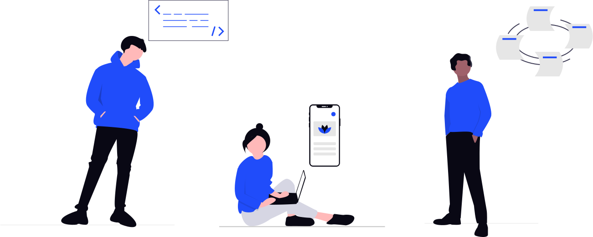

I am,
Nirmal PrajapatiHello, and welcome to my portfolio! I am Nirmal Prajapati, a Information Technology student with a passion for technology, problem-solving, and innovation. Throughout my academic journey, I have gained hands-on experience in various areas of computer science, including software development, algorithms, and data structures, as well as web development.
About Me
I am Nirmal Prajapati, a passionate and dedicated Full-Stack Developer pursuing a Bachelor of Engineering in Information Technology at GEC, Modasa. With expertise in frontend technologies like HTML, CSS, JavaScript, TailwindCSS, and Bootstrap, as well as backend development using Node.js, Express.js, MongoDB, and PostgreSQL, I enjoy building efficient and dynamic web applications. My problem-solving skills in Java with DSA help me approach challenges analytically and develop optimized solutions.
I have worked on several individual and group projects, including a real-time chat web application with a chatbot, a Full-Stack Student Things project, and a Full-Stack E-commerce service provider website. Additionally, I collaborated on a business comparison e-commerce platform and a Hinduism website, gaining valuable experience in teamwork and project execution.

Beyond my academic projects, I have professional experience working on a client project with a team, where I contributed as a frontend developer using HTML, CSS, JavaScript, and Bootstrap. This experience enhanced my ability to work in a collaborative environment and deliver high-quality user interfaces.
Currently, I am actively working on two projects, constantly improving my skills and gaining hands-on experience. My goal is to become a proficient Full-Stack Developer and secure a good internship in web development to further refine my expertise and contribute to impactful projects. Based in Ahmedabad, I am always eager to learn, explore new technologies, and push my boundaries in the ever-evolving field of web development.